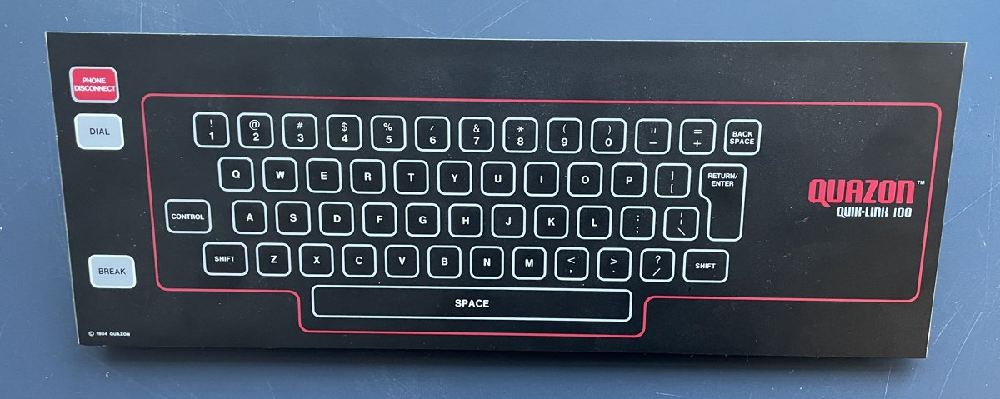

1984
Quazon Corporation, Carrollton, TX
Quazon Quik-Link 100
A $199 information appliance that turns your TV into a computer terminal through a telephone jack

A $199 information appliance that turns your TV into a computer terminal through a telephone jack
